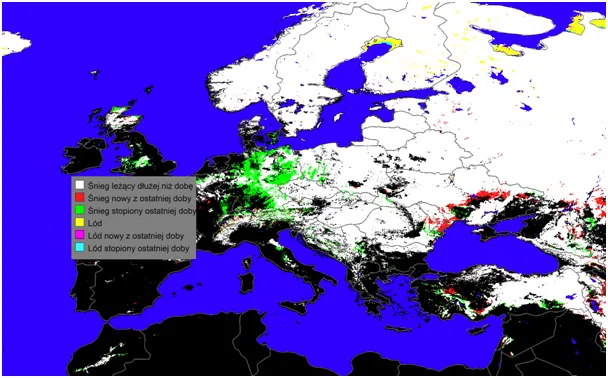
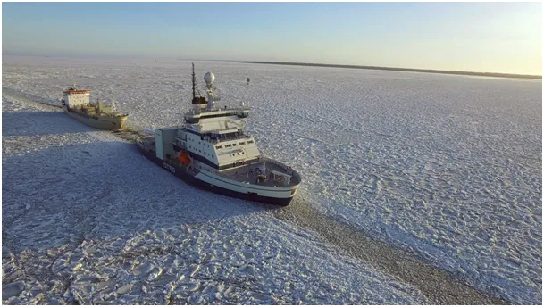
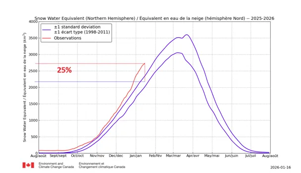

Spóźnione, ale szczere pozdrowienia z Laponii.
W tym sezonie mapy pogodowe docierają z kilkudniowym opóźnieniem, a modele prognostyczne są naiwnie głupawe. Podczas ostatniej nocy w Polsce prognozowano ocieplenie, skończyło się na minus 13 na Mazurach. Blokada wschodniego Atlantyku trwa od początku zimy skutkiem czego polarne mrozy zsuwają się coraz bezczelniej na południe. Przejawem tego jest śnieg zalegający w górach Maroka na terenach i w okresie niespotykanym w ostatnich latach. Podobnie góry Libanu i północnej Syrii też świecą bielą jak Buka zębami. Północny Bałtyk w ostatnich dekadach rzadko zamarzał, a jeśli to w lutym.

Tymczasem w połowie stycznia mamy całkiem zmarznięte północne rubieże i proces ten będzie postępował przez kolejne tygodnie. Na całej półkuli północnej mamy już 25% więcej śniegu niż w latach poprzednich, a było już nawet 33% ponad normę, ale ostatni tydzień przyniósł pewne opamiętanie.

Ciekawostką "globalnego ocieplenia" jest fakt, że koniec marca ostatnio przynosi szybki, dodatkowy wzrost pokrywy śnieżnej, co powoduje że mamy wiosną zimne północne wiatry aż do czerwca.

Na szczęśćcie Słońce już jest na tyle wysoko (blisko 18 st.), że nagrzewa ono nasze otoczenie, co zobaczymy na wykresach temperatur szybko pnących się w słoneczny dzień. Każdy kwadrans ma tu duże znaczenie, a dziś dzień jest dłuższy od grudniowego przesilenia już o 38 minut! To będzie szybko się zmieniać, o czym pisałem tu: https://pawelklimczewski.pl/?s=sinus
Paweł Klimczewski